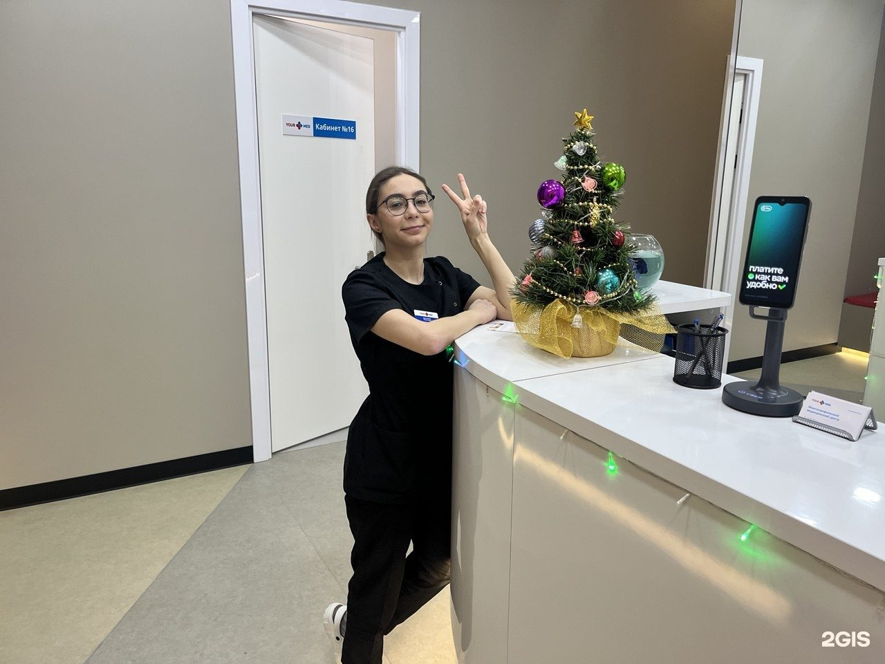

медцентр для всей семьи · ЖК ART, Авангардная ул., 3
Взрослые и детские специалисты, диагностика и гинекология. Пн–Пт 8:00–21:00, Сб–Вс 9:00–21:00.

направления · по данным 2ГИС
Стоимость приёма — по записи или на сайте клиники.
Отзывы · 2ГИС
«Посещая данную клинику, очень давно. Всегда встречают с улыбкой на ресепшене, за это спасибо. Делаю капельницы, медсестрам отдельное спасибо. Очень хорошая клиника.»
«Уже не первый год обращаюсь к врачу дерматовенерогу-косметологу Раевской Татьяне Викторовне: профессионал высокого класса, внимательная и чуткая, с хорошим эстетическим вкусом. Выполняли процедуру-ботулинотерапия лба и межбровья, уже не первый раз делаю, эффект меня как всегда ра…»
«Была на приеме у Хирурга Шишкова,хороший специалист,все подробно объяснил и помог справиться с проблемой.»